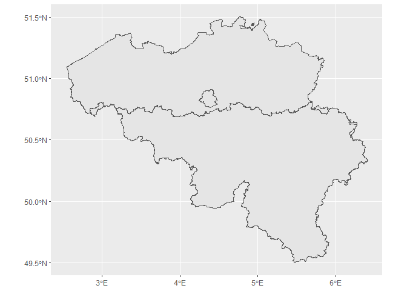
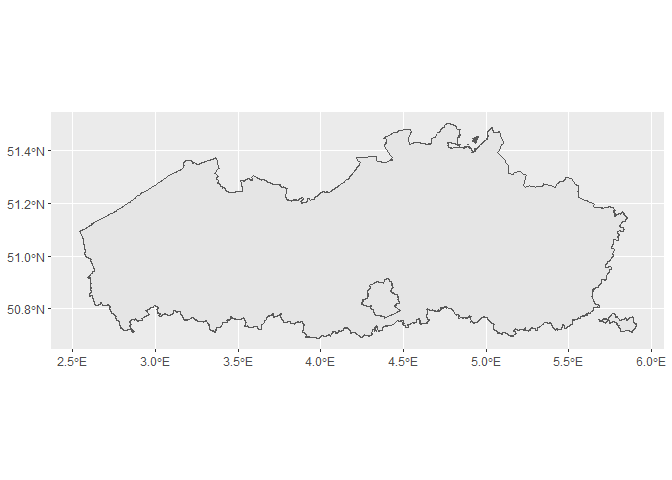
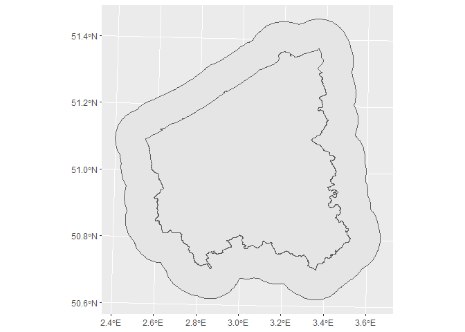

Using WFS services in R
How to use WFS (vectors/features) GIS services within R scripts
What is WFS?
In computing, the Open Geospatial Consortium (OGC) Web Feature Service (WFS) Interface Standard provides an interface allowing requests for geographical features across the web using platform-independent calls. One can think of geographical features as the “source code” behind a map, whereas the Web Mapping Service (WMS) interface or online tiled mapping portals like Google Maps return only an image, which end-users cannot edit or spatially analyze.
The standard output format for reading or downloading data from a WFS is the XML-based Geography Markup Language (GML), but other formats like shapefiles or geojson are also available. In early 2006 the OGC members approved the OpenGIS GML Simple Features Profile. This profile is designed both to increase interoperability between WFS servers and to improve the ease of implementation of the WFS standard. (Source: Wikipedia)
Before we embark on using a WFS service in R, we would like to draw your attention to the following issue when using a WFS service in a workflow that needs to be reproducible in the longer term. A distributed, stable storage of the GIS data used in a workflow is necessary to make that workflow reproducible on a longer term. When using dynamic databases and web services, where the data they present are expected to evolve (e.g. by always pointing at the latest release in these WFS-cases), this is not guaranteed if you just use the WFS service to directly read GIS data from it. Instead of directly reading the GIS data, it is also possible to download the data from the WFS service to disk (and possibly archive on, e.g., Zenodo) in order to obtain a stable version that can be re-used later by reading it from disk. Also, in case it takes a long time to get the GIS data from the WFS service, downloading instead of directly reading is often a better choice. On the other hand, some types of workflows might instead require the most up to date GIS data that are available to be retrieved while no workflow reproducibility is needed. Do note that publishing the workflow is always recommended for published work. It serves the scientific community and it is also a way of proving scientific quality - hence reproducibility is often the best choice for published work.
Some of the material presented in this tutorial benefitted from a tutorial presented at the Use of R in Official Statistics conference in The Hague, September 2018 Spatial Analysis in R with Open Geodata, from Lovelace, Nowosad, and Muenchow (2020) and from this Dutch wordpress blogpost.
Useful overviews of web feature services
WFS (and WM(T)S) services for Belgium and regions in Belgium:
- overview of WFS services for Flanders region
- overview compiled by Michel Stuyts, which is also available on gitlab
- overview maintained by DOV Vlaanderen
- Geoportal of the Belgian federal institutions, notably NGI: several of these services can be viewed interactively at the NGI TopoMapViewer, including the CartoWeb.be WMS/WMTS service
European portals:
- inspire geoportal: European portal for spatial data - some of which have a WFS service
- environmental data for Europe: many of the products listed have either a WMS or a WFS service
Worldwide coverage:
Used packages
library(sf) # simple features packages for handling vector GIS data
library(httr) # generic webservice package
library(tidyverse) # a suite of packages for data wrangling, transformation, plotting, ...
library(ows4R) # interface for OGC webservices
Get to know what the service can do with GetCapabilities
First of all we need the URL of the service.
wfs_bwk <- "https://geoservices.informatievlaanderen.be/overdrachtdiensten/BWK/wfs"
Next, we append information to the URL address with the aid of
httr::parse_url and httr::build_url. The former function parses an
URL into a list for easier programmatic addition of information to the
URL. The latter function does the reverse and builds the URL from the
list object.
The url$query slot is where you instruct the WFS what information it
should return. It is constructed as a list with name-value pairs. For
now, we only need to specify the GetCapabilities request. Other
information such as passing version = 2.0.0 can be added, but is not
required (by default, the latest version of the WFS service will be
chosen).
url <- parse_url(wfs_bwk)
url$query <- list(service = "wfs",
#version = "2.0.0", # facultative
request = "GetCapabilities"
)
request <- build_url(url)
request
## [1] "https://geoservices.informatievlaanderen.be/overdrachtdiensten/BWK/wfs?service=wfs&request=GetCapabilities"
With GetCapabilities, we obtain a complete overview of all metadata
for the web service.
To see all capabilities, you can visit the request in the
webbrowser.
For instance opening the page in the webbrowser and searching for
“Filter_Capabilities” allows you to see all possible ways to filter the
data from a WFS layer (e.g. restrict the downloaded data to a specified
bounding box with SpatialOperator name="BBOX").
Instead of searching the page on the web, there are several ways to
access specific pieces of information programmatically. We will show
here how to do this using functions in the ows4R package. The first
thing we need to do is generate a connection to the WFS with the aid of
WFSClient$new().
bwk_client <- WFSClient$new(wfs_bwk,
serviceVersion = "2.0.0") #serviceVersion must be provided here
The resulting object bwk_client is an R6 object. If you are not
familiar with R6 object, you might want to read the R6 chapter in
Advanced R.
Printing `bwk_client looks like this:
bwk_client
## <WFSClient>
## Inherits from: <OWSClient>
## Public:
## attrs: list
## capabilities: WFSCapabilities, OWSCapabilities, OGCAbstractObject, R6
## clone: function (deep = FALSE)
## defaults: list
## describeFeatureType: function (typeName)
## element: AbstractObject
## encode: function (addNS = TRUE, geometa_validate = TRUE, geometa_inspire = FALSE,
## ERROR: function (text)
## getCapabilities: function ()
## getClass: function ()
## getClassName: function ()
## getFeatures: function (typeName, ...)
## getFeatureTypes: function (pretty = FALSE)
## getHeaders: function ()
## getNamespaceDefinition: function (recursive = FALSE)
## getPwd: function ()
## getToken: function ()
## getUrl: function ()
## getUser: function ()
## getVersion: function ()
## INFO: function (text)
## initialize: function (url, serviceVersion = NULL, user = NULL, pwd = NULL,
## isFieldInheritedFrom: function (field)
## logger: function (type, text)
## loggerType: NULL
## namespace: OWSNamespace, R6
## reloadCapabilities: function ()
## url: https://geoservices.informatievlaanderen.be/overdrachtdi ...
## verbose.debug: FALSE
## verbose.info: FALSE
## version: 2.0.0
## WARN: function (text)
## wrap: FALSE
## Private:
## fromComplexTypes: function (value)
## headers: NULL
## pwd: NULL
## serviceName: WFS
## system_fields: verbose.info verbose.debug loggerType wrap element names ...
## token: NULL
## user: NULL
## xmlElement: AbstractObject
## xmlExtraNamespaces: NULL
## xmlNamespacePrefix: OWS
## xmlNodeToCharacter: function (x, ..., indent = "", tagSeparator = "\n")
The features listed can be accessed using $. We can see that some of
them are again functions. As a first example, the following code will
list all available layers for that WFS.
bwk_client$getFeatureTypes(pretty = TRUE)
## name title
## 1 BWK:Bwkhab BWK 2 - BWK-zone en Natura 2000 Habitat
## 2 BWK:Bwkfauna BWK 2 - Faunistisch belangrijke gebieden
## 3 BWK:Hab3260 BWK 2 - Habitattype 3260
Another way of accessing this information is:
bwk_client$getFeatureTypes() %>%
map_chr(function(x){x$getName()})
## [1] "BWK:Bwkhab" "BWK:Bwkfauna" "BWK:Hab3260"
bwk_client$getFeatureTypes() %>%
map_chr(function(x){x$getTitle()})
## [1] "BWK 2 - BWK-zone en Natura 2000 Habitat"
## [2] "BWK 2 - Faunistisch belangrijke gebieden"
## [3] "BWK 2 - Habitattype 3260"
We are using purrr::map() functionalities here, because the output of
bwk_client$getFeatureTypes() is a list and each element of the list
contains information about a layer.
Let’s turn back our attention to getCapabilities() and see what
information we can extract from it.
bwk_client$getCapabilities()
## <WFSCapabilities>
## Inherits from: <OWSCapabilities>
## Public:
## attrs: list
## clone: function (deep = FALSE)
## defaults: list
## element: Capabilities
## encode: function (addNS = TRUE, geometa_validate = TRUE, geometa_inspire = FALSE,
## ERROR: function (text)
## findFeatureTypeByName: function (expr, exact = TRUE)
## getClass: function ()
## getClassName: function ()
## getClient: function ()
## getFeatureTypes: function (pretty = FALSE)
## getNamespaceDefinition: function (recursive = FALSE)
## getOperationsMetadata: function ()
## getOWSVersion: function ()
## getRequest: function ()
## getService: function ()
## getServiceIdentification: function ()
## getServiceProvider: function ()
## getServiceVersion: function ()
## getUrl: function ()
## INFO: function (text)
## initialize: function (url, version, logger = NULL, ...)
## isFieldInheritedFrom: function (field)
## logger: function (type, text)
## loggerType: NULL
## namespace: NULL
## setClient: function (client)
## verbose.debug: FALSE
## verbose.info: FALSE
## WARN: function (text)
## wrap: FALSE
## Private:
## client: WFSClient, OWSClient, OGCAbstractObject, R6
## featureTypes: list
## fetchFeatureTypes: function (xmlObj, version)
## fromComplexTypes: function (value)
## operationsMetadata: OWSOperationsMetadata, R6
## owsVersion: 1.1
## request: OWSGetCapabilities, OWSHttpRequest, OGCAbstractObject, R6
## service: WFS
## serviceIdentification: OWSServiceIdentification, R6
## serviceProvider: OWSServiceProvider, R6
## serviceVersion: 2.0.0
## system_fields: verbose.info verbose.debug loggerType wrap element names ...
## url: https://geoservices.informatievlaanderen.be/overdrachtdi ...
## xmlElement: Capabilities
## xmlExtraNamespaces: NULL
## xmlNamespacePrefix: WFS_1_1
## xmlNodeToCharacter: function (x, ..., indent = "", tagSeparator = "\n")
This is again an R6 class object and the $ can be used to chain
together several functions, much in the same way as the pipe operator
%>%. The following chunk illustrates its use. Try executing this
incrementally (select and execute code up to first $, second $, …)
to see what happens.
bwk_client$
getCapabilities()$
findFeatureTypeByName("BWK:Bwkhab")$
getDescription() %>%
map_chr(function(x){x$getName()})
## [1] "UIDN" "OIDN" "TAG" "EVAL" "EENH1"
## [6] "EENH2" "EENH3" "EENH4" "EENH5" "EENH6"
## [11] "EENH7" "EENH8" "V1" "V2" "V3"
## [16] "HERK" "INFO" "BWKLABEL" "HAB1" "PHAB1"
## [21] "HAB2" "PHAB2" "HAB3" "PHAB3" "HAB4"
## [26] "PHAB4" "HAB5" "PHAB5" "HERKHAB" "HERKPHAB"
## [31] "HABLEGENDE" "SHAPE"
# or shorter
bwk_client$
describeFeatureType(typeName = "BWK:Bwkhab") %>%
map_chr(function(x){x$getName()})
## [1] "UIDN" "OIDN" "TAG" "EVAL" "EENH1"
## [6] "EENH2" "EENH3" "EENH4" "EENH5" "EENH6"
## [11] "EENH7" "EENH8" "V1" "V2" "V3"
## [16] "HERK" "INFO" "BWKLABEL" "HAB1" "PHAB1"
## [21] "HAB2" "PHAB2" "HAB3" "PHAB3" "HAB4"
## [26] "PHAB4" "HAB5" "PHAB5" "HERKHAB" "HERKPHAB"
## [31] "HABLEGENDE" "SHAPE"
This lists all available fields for the layer “BWK:Bwkhab.”
Here is how to get a character vector naming all available operations of the WFS:
bwk_client$
getCapabilities()$
getOperationsMetadata()$
getOperations() %>%
map_chr(function(x){x$getName()})
## [1] "GetCapabilities" "DescribeFeatureType" "GetFeature"
## [4] "GetPropertyValue" "ListStoredQueries" "DescribeStoredQueries"
## [7] "CreateStoredQuery" "DropStoredQuery"
The next chunk shows how we can extract the available output formats. We
will see later that GetFeature is the operation needed to read or
download data from the WFS. The metadata for this operation has what we
want and we can extract it with a combination of purrr::map() and
`purrr::pluck().
bwk_client$
getCapabilities()$
getOperationsMetadata()$
getOperations() %>%
map(function(x){x$getParameters()}) %>%
pluck(3, "outputFormat")
## [1] "text/xml; subtype=gml/3.2"
## [2] "gml32"
## [3] "application/gml+xml; version=3.2"
## [4] "GML2"
## [5] "KML"
## [6] "SHAPE-ZIP"
## [7] "application/json"
## [8] "application/vnd.google-earth.kml xml"
## [9] "application/vnd.google-earth.kml+xml"
## [10] "csv"
## [11] "gml3"
## [12] "json"
## [13] "text/xml; subtype=gml/2.1.2"
## [14] "text/xml; subtype=gml/3.1.1"
Some more examples follow. Let’s extract the bounding boxes for all layers.
bwk_client$
getCapabilities()$
getFeatureTypes() %>%
map(function(x){x$getBoundingBox()})
## [[1]]
## min max
## x 2.525262 5.936009
## y 50.673762 51.505480
##
## [[2]]
## min max
## x 2.525262 5.936009
## y 50.673762 51.505480
##
## [[3]]
## min max
## x 2.525262 5.936009
## y 50.673762 51.505480
As expected for this WFS, the bounding boxes are the same for all layers.
The final example shows how to get the abstract so we can read about the contents of the layers.
bwk_client$
getCapabilities()$
getFeatureTypes() %>%
map_chr(function(x){x$getAbstract()})
## [1] "Zone waaraan een biologische waarde gegeven wordt, alsook een aanduiding van het Natura 2000-habitattype, de vegetatiekundige eenheden of ecotopen, bodembedekking en gegevens over eventueel aanwezige kleine landschapselementen (BWK-karteringseenheden)."
## [2] "Op de Biologische Waarderingskaart krijgen een aantal gebieden een specifieke arcering omwille van de aanwezigheid van bepaalde fauna-elementen. De afbakening is gebaseerd op soorten die tot de Rode lijst-categorieën 'Met uitsterven bedreigd', 'Bedreigd' en 'Kwetsbaar' behoren. Een ruimere omschrijving wordt verstrekt in het afzonderlijk document per kaartblad \"toelichtingXX\", met XX het kaartbladnummer."
## [3] "Voorkomen van het Natura 2000 habitattype 3260, de submontane- en laaglandrivieren met waterranonkel- en fonteinkruidvegetaties."
Read or download vector data from WFS: GetFeature
Example 1: an entire layer
The map of regions of Belgium.
wfs_regions <- "https://eservices.minfin.fgov.be/arcgis/services/R2C/Regions/MapServer/WFSServer"
regions_client <- WFSClient$new(wfs_regions,
serviceVersion = "2.0.0")
regions_client$getFeatureTypes(pretty = TRUE)
## name title
## 1 R2C_Regions:Regions Regions
url <- parse_url(wfs_regions)
url$query <- list(service = "wfs",
#version = "2.0.0", # optional
request = "GetFeature",
typename = "regions",
srsName = "EPSG:4326"
)
request <- build_url(url)
bel_regions <- read_sf(request) #Lambert2008
ggplot(bel_regions) +
geom_sf()

Example 2: filter by attributes
In this example, we only want to extract specific regions. This can be done using either standard OGC filter specification or using a Contextual Query Language (CQL) filter. The latter is currently a draft proposal for an OGC standard and is subject to change. A didactical explanation of CQL can be found here.1 CQL currently only works for WFS services that are hosted on a GeoServer!
In this example we also show how the previously used R code can be
stitched together using the pipe (%>%) operator.
Standard OGC filter
Unfortunately, the standard OGC filter format is very verbose…
wfs_regions %>%
parse_url() %>%
list_merge(query = list(service = "wfs",
#version = "2.0.0", # optional
request = "GetFeature",
typename = "regions",
srsName = "EPSG:4326",
filter = "<Filter><PropertyIsEqualTo><PropertyName>regions:NameDUT</PropertyName><Literal>'Vlaams Gewest'</Literal></PropertyIsEqualTo></Filter>")) %>%
build_url() %>%
read_sf() %>%
ggplot() +
geom_sf()

CQL filter
We use a different WFS service for which CQL works. First we need to know the names of the fields by which we can filter.
wfs_vrbg <- "https://geoservices.informatievlaanderen.be/overdrachtdiensten/VRBG/wfs"
vrbg_client <- WFSClient$new(wfs_vrbg,
serviceVersion = "1.1.0")
vrbg_client$
getCapabilities()$
findFeatureTypeByName("VRBG:Refprv")$
getDescription() %>%
map_chr(function(x){x$getName()})
## [1] "UIDN" "OIDN" "TERRID" "NAAM" "NISCODE" "NUTS2" "SHAPE"
# another way of doing this:
wfs_vrbg %>%
parse_url() %>%
list_merge(query = list(service = "wfs",
#version = "1.1.0", # optional
request = "DescribeFeatureType",
typeName = "VRBG:Refprv")) %>%
build_url() %>%
GET()
## Response [https://geoservices.informatievlaanderen.be/overdrachtdiensten/VRBG/wfs?service=wfs&request=DescribeFeatureType&typeName=VRBG%3ARefprv]
## Date: 2022-03-15 08:06
## Status: 200
## Content-Type: text/xml; subtype=gml/3.2
## Size: 1.55 kB
## <?xml version="1.0" encoding="UTF-8"?><xsd:schema xmlns:xsd="http://www.w3.or...
## <xsd:import namespace="http://www.opengis.net/gml/3.2" schemaLocation="http...
## <xsd:complexType name="RefprvType">
## <xsd:complexContent>
## <xsd:extension base="gml:AbstractFeatureType">
## <xsd:sequence>
## <xsd:element maxOccurs="1" minOccurs="1" name="UIDN" nillable="fals...
## <xsd:element maxOccurs="1" minOccurs="1" name="OIDN" nillable="fals...
## <xsd:element maxOccurs="1" minOccurs="0" name="TERRID" nillable="tr...
## <xsd:element maxOccurs="1" minOccurs="0" name="NAAM" nillable="true...
## ...
The CQL filter format is much more human readable and easier to code:
sf_prov <- wfs_vrbg %>%
parse_url() %>%
list_merge(query = list(service = "wfs",
#version = "1.1.0", # optional
request = "GetFeature",
typeName = "VRBG:Refprv",
srsName = "EPSG:31370",
cql_filter="NAAM='West-Vlaanderen'")) %>%
build_url() %>%
read_sf(crs = 31370)
sf_prov
## Simple feature collection with 1 feature and 7 fields
## Geometry type: MULTISURFACE
## Dimension: XY
## Bounding box: xmin: 21991.38 ymin: 155928.6 xmax: 90416.92 ymax: 229719.6
## Projected CRS: Belge 1972 / Belgian Lambert 72
## # A tibble: 1 x 8
## gml_id UIDN OIDN TERRID NAAM NISCODE NUTS2 SHAPE
## * <chr> <dbl> <dbl> <dbl> <chr> <chr> <chr> <MULTISURFACE [m]>
## 1 Refprv.3 14 3 351 West-Vlaa~ 30000 BE25 (POLYGON ((80190.82 2292~
Also check out example 5 for a more advanced use of the CQL filter.
Note, the rather exotic geometry type that is returned (MULTISURFACE).
Some sf functions, such as st_buffer(), will not work out of the box
for this type. In this specific case, we need an intermediate step
st_cast(to = "GEOMETRYCOLLECTION") to make it work.
sf_prov %>%
st_buffer(dist = 100) # errors
## Error in CPL_geos_op("buffer", x, dist, nQ, numeric(0), logical(0)): Evaluation error: ParseException: Unknown WKB type 12.
sf_prov_buffer <- sf_prov %>%
st_cast(to = "GEOMETRYCOLLECTION") %>%
st_buffer(dist = 10000) # works
sf_prov %>%
ggplot() +
geom_sf(data = sf_prov_buffer) +
geom_sf()

If you need to further convert to geometry type POLYGON, then use
st_collection_extract() to extract the Polygon from the
GeometryCollection:
sf_prov %>%
st_cast(to = "GEOMETRYCOLLECTION") %>%
st_collection_extract(type = "POLYGON")
## Simple feature collection with 1 feature and 7 fields
## Geometry type: POLYGON
## Dimension: XY
## Bounding box: xmin: 21991.38 ymin: 155928.6 xmax: 90416.92 ymax: 229719.6
## Projected CRS: Belge 1972 / Belgian Lambert 72
## # A tibble: 1 x 8
## gml_id UIDN OIDN TERRID NAAM NISCODE NUTS2 SHAPE
## <chr> <dbl> <dbl> <dbl> <chr> <chr> <chr> <POLYGON [m]>
## 1 Refprv.3 14 3 351 West-Vlaa~ 30000 BE25 ((80190.82 229279.7, 801~
More generally however, if a row of the MULTISURFACE object
corresponds to either a MULTIPOLYGON (collection of polygons) or a
POLYGON with holes, with the above
st_collection_extract(type = "POLYGON") this row will be repeated for
all constituting polygons. This results in too many features. It can be
solved as follows:
# to demonstrate, we first create an sf object of several MULTISURFACE features:
sf_prov_all <-
wfs_vrbg %>%
parse_url() %>%
list_merge(query = list(service = "wfs",
request = "GetFeature",
typeName = "VRBG:Refprv",
srsName = "EPSG:31370")) %>%
build_url() %>%
read_sf(crs = 31370)
# converting:
sf_prov_all %>% # 5 MULTISURFACE features
st_cast("GEOMETRYCOLLECTION") %>%
mutate(id = seq_len(nrow(.))) %>%
st_collection_extract("POLYGON") %>% # 28 POLYGON features
aggregate(list(.$id), first, do_union = FALSE) %>% # 5 MULTIPOLYGON features
select(-id, -Group.1) %>%
as_tibble %>%
st_as_sf
## Simple feature collection with 5 features and 7 fields
## Geometry type: MULTIPOLYGON
## Dimension: XY
## Bounding box: xmin: 21991.38 ymin: 153058.3 xmax: 258871.8 ymax: 244027.2
## Projected CRS: Belge 1972 / Belgian Lambert 72
## # A tibble: 5 x 8
## gml_id UIDN OIDN TERRID NAAM NISCODE NUTS2 geometry
## <chr> <dbl> <dbl> <dbl> <chr> <chr> <chr> <MULTIPOLYGON [m]>
## 1 Refprv.1 12 2 357 Antwerpen 10000 BE21 (((178131.2 244010.4, 17~
## 2 Refprv.2 13 4 359 Vlaams Br~ 20001 BE24 (((200484.9 193541, 2004~
## 3 Refprv.3 14 3 351 West-Vlaa~ 30000 BE25 (((80190.82 229279.7, 80~
## 4 Refprv.4 16 1 355 Limburg 70000 BE22 (((231494.3 219142.5, 23~
## 5 Refprv.5 17 5 356 Oost-Vlaa~ 40000 BE23 (((145735.2 220358.3, 14~
Example 3: restrict to a bounding box
This examples illustrates how you can read or download information from a WFS for further use in R.
Let’s start by reading in the “BWK:Bwkhab” layer for the Hallerbos area.
The main part is defining the input and output. We store the data in GeoJSON format which is an open standard format designed for representing simple geographical features, along with their non-spatial attributes. It is based on JSON, the JavaScript Object Notation.
We also add the bounding box from which we want to retrieve the data. This is very important to add. If you omit a bounding box, the service will return the entire map which can be very large.
url <- parse_url(wfs_bwk)
url$query <- list(service = "WFS",
#version = "2.0.0", # optional
request = "GetFeature",
typename = "BWK:Bwkhab",
bbox = "142600,153800,146000,156900")
request <- build_url(url)
Let’s check what we are about to read with sf::st_layers(). This time,
the function does return useful information, but the layer name
BWK:Bwkhab seems to be overwritten.
st_layers(request)
## Driver: GML
## Available layers:
## layer_name geometry_type features fields
## 1 Bwkhab Curve Polygon 670 32
bwk_hallerbos <- read_sf(request)
Note that the layer = ... argument of sf:read_sf() cannot be used to
specify the layer when you pass a WFS GetFeature request to the
function.
Let’s make a simple plot of the object. Note that the object contains features outside of the bounding box. Those are features which have only some part within the bounding box.
ggplot(bwk_hallerbos) +
geom_sf()

You can use sf::st_write() to save this layer in any format that is
listed by sf::st_drivers().
Example 4: downloading data to disk
Continuing from the previous example, we can download the data with
httr::GET and httr::write_disk(). The only difference is that we add
outputFormat to the request. In this way we can deviate from the
default output format and choose the output format we like.
url <- parse_url(wfs_bwk)
url$query <- list(service = "WFS",
#version = "2.0.0", # optional
request = "GetFeature",
typename = "BWK:Bwkhab",
bbox = "142600,153800,146000,156900",
outputFormat = "application/json")
request <- build_url(url)
file <- tempfile(fileext = ".geojson")
GET(url = request,
write_disk(file))
## Response [https://geoservices.informatievlaanderen.be/overdrachtdiensten/BWK/wfs?service=WFS&request=GetFeature&typename=BWK%3ABwkhab&bbox=142600%2C153800%2C146000%2C156900&outputFormat=application%2Fjson]
## Date: 2022-03-15 08:07
## Status: 200
## Content-Type: application/json;charset=UTF-8
## Size: 821 kB
## <ON DISK> C:\Users\HANS_V~1\AppData\Local\Temp\RtmpiCPe1e\file1ea4763942e4.geojson
At this point, all features are downloaded and can be used in R as we
would with any other local file. So we need to load the file with
read_sf() from sf.
bwk_hallerbos2 <- read_sf(file)
Downloading data could be important for reproducible workflows (e.g. by using the downloaded data as the ‘real’ starting point and distribute it).
Example 5: extract feature data at particular points
In some situations, we do not need the spatial features (polygons,
lines, points), but are interested in the data at a particular point
(i.e. attribute table data) of the spatial feature. When working in a
local GIS environment, one would use a spatial operator to extract the
data (e.g. within, intersects, contains,…). As we discussed
earlier, WFS supports certain spatial operators as part of the service
to directly query this data and overcomes the need to download the
spatial feature data first.
Consider the following use case: You want to extract the attribute data from a soil map for a number of sampling points (point coordinates). This use case can be tackled by relying on the WFS service and the affiliated spatial operators.
Our example data point (in Lambert 72):
x_lam <- 173995.67
y_lam <- 212093.44
From this point we know the data, so we can verify the result (in Dutch):
- Bodemtype: s-Pgp3(v)
- Bodemserie: Pgp
- Textuurklasse: licht zandleem
- Drainageklasse: uiterst nat, gereduceerd
Hence, we now want to extract these soil properties from the WFS, for the coordinates defined above.
properties_of_interest <- c("Drainageklasse",
"Textuurklasse",
"Bodemserie",
"Bodemtype")
The URL of the wfs service of the soil map of the Flemish region:
wfs_bodemtypes <- "https://www.dov.vlaanderen.be/geoserver/bodemkaart/bodemtypes/wfs"
The essential part is to set up the proper query! The required data for the service is defined in the metadata description. This can look a bit overwhelming at the start, but is a matter of looking for some specific elements of the (XML) document:
service(WFS) andrequest(GetFeature) are mandatory fields (see below);version(1.1.0) is optionaltypeName: Look at the different<FeatureType...enlisted and pick the<Name>of the one you’re interested in. In this particular casebodemkaart:bodemtypesis the only one available.outputFormat: The supported output formats are enlisted in<ows:Parameter name="outputFormat">. As the service provides CSV as output, this is a straightforward option.jsonis another popular one.propertyname: A list of the attribute table fields (cfr. supra). A full list of the Flanders soil map is provided here.- We also define the
CRS, using the EPSG code. CQL_FILTER: Define the spatial operator, in this caseINTERSECTSof the WFSgeomand ourPOINTcoordinate. The operators are enlisted in the<ogc:SpatialOperators>field. Note thatgeomis the name of the geometry field (in this examplegeombut other web services may use a different name such asSHAPE,geometryorthe_geom).
Formatting all this information in a query and executing the request
(GET) towards the service:
query <- list(service = "WFS",
request = "GetFeature",
#version = "1.1.0", # optional
typeName = "bodemkaart:bodemtypes",
outputFormat = "csv",
propertyname = as.character(paste(properties_of_interest,
collapse = ",")),
CRS = "EPSG:31370",
CQL_FILTER = sprintf("INTERSECTS(geom,POINT(%s %s))",
x_lam, y_lam))
result <- GET(wfs_bodemtypes, query = query)
result
## Response [https://www.dov.vlaanderen.be/geoserver/bodemkaart/bodemtypes/wfs?service=WFS&request=GetFeature&typeName=bodemkaart%3Abodemtypes&outputFormat=csv&propertyname=Drainageklasse%2CTextuurklasse%2CBodemserie%2CBodemtype&CRS=EPSG%3A31370&CQL_FILTER=INTERSECTS%28geom%2CPOINT%28173995.67%20212093.44%29%29]
## Date: 2022-03-15 08:07
## Status: 200
## Content-Type: text/csv;charset=UTF-8
## Size: 129 B
## FID,Bodemtype,Bodemserie,Textuurklasse,Drainageklasse
## bodemtypes.72727,s-Pgp3(v),Pgp,licht zandleem,"uiterst nat, gereduceerd"
The result is not yet formatted to be used as a dataframe. We need to
use a small trick using the textConnection function to get from the
result (bits) towards a readable output in a dataframe:
df <- read.csv(textConnection(content(result, 'text')))
knitr::kable(df)
| FID | Bodemtype | Bodemserie | Textuurklasse | Drainageklasse |
|---|---|---|---|---|
| bodemtypes.72727 | s-Pgp3(v) | Pgp | licht zandleem | uiterst nat, gereduceerd |
Which indeed corresponds to the data of the coordinate.
In order to make your coding work lighter, you can easily put the WFS R
code (building the WFS request and retrieving its results) inside a
function. Just use the
code
of the inborutils::extract_soil_map_data() function (documented
here)
as a template for your own function.
Now this function makes it really easy to request the data:
library(inborutils)
extract_soil_map_data(
x_lam = x_lam,
y_lam = y_lam) %>%
knitr::kable()
## Defaulting to Bodemserie, Unibodemtype, Bodemtype. To avoid this message provide properties of interest in the function call.
| Bodemtype | Unibodemtype | Bodemserie |
|---|---|---|
| s-Pgp3(v) | s-Pgp3(v) | Pgp |
extract_soil_map_data(
x_lam = x_lam,
y_lam = y_lam,
properties_of_interest = c("Eenduidige_legende", "Textuurklasse")) %>%
knitr::kable()
| Textuurklasse | Eenduidige_legende |
|---|---|
| licht zandleem | De twee bovenvermelde grondwatergronden op licht zandleem (Pgp en Pgg) zijn permanent zeer nat. Ze zijn overstroomd in de winter en hebben een zomerwaterstand op ongeveer 40 cm. Ze zijn ongeschikt voor landbouw; zelfs weiden geven geen bevredigende resultaten. Deze bodems zijn dus ongeschikt voor uitbating; eventueel kunnen populieren, mits de nodige ontwatering, aangepast worden, de resultaten zijn echter weinig gunstig. |
extract_soil_map_data(
x_lam = x_lam,
y_lam = y_lam,
properties_of_interest = properties_of_interest) %>%
knitr::kable()
| Bodemtype | Bodemserie | Textuurklasse | Drainageklasse |
|---|---|---|---|
| s-Pgp3(v) | Pgp | licht zandleem | uiterst nat, gereduceerd |
# multiple point locations
xy <- data.frame(id = c("loc1", "loc2"),
x = c(173995.67, 180000),
y = c(212093.4, 212000))
xy %>%
group_by(id) %>%
summarise(extract_soil_map_data(x, y,
properties_of_interest = properties_of_interest)) %>%
knitr::kable()
| id | Bodemtype | Bodemserie | Textuurklasse | Drainageklasse |
|---|---|---|---|---|
| loc1 | s-Pgp3(v) | Pgp | licht zandleem | uiterst nat, gereduceerd |
| loc2 | Sdg | Sdg | lemig zand | matig nat, matig gleyig |
Example 6: pagination
When a layer of a WFS service contains many thousands of features, often the WFS service will restrict the number of features that can be obtained with one request. This is done to optimize performance (responsiveness) of the WFS service: it is more efficient to transfer small packages of data and this is even more the case when multiple user requests are transmitted concurrently to the service.
In this example we show how to deal with this situation. A technique called ‘pagination’ can be used to obtain all features one is interested in by sending multiple requests to the server. The service is available from version ‘2.0.0’ onwards. Servers running older versions may or may not have support for ‘pagination.’
We will use the ‘Watervlakken’ WFS service for this example.
# this layer returns just 1000 features (for performance reasons)
wfs <- "https://gisservices.inbo.be/arcgis/services/Watervlakken/MapServer/WFSServer?"
url <- parse_url(wfs)
url$query <- list(service = "wfs",
version = "2.0.0", # facultative
request = "GetFeature",
typename = "Watervlakken:Watervlakken",
srsName = "EPSG:31370"
)
request <- build_url(url)
gd <- read_sf(request)
gd
## Simple feature collection with 1000 features and 12 fields
## Geometry type: MULTIPOLYGON
## Dimension: XY
## Bounding box: xmin: 136507.8 ymin: 187356 xmax: 192040.7 ymax: 237604.4
## Projected CRS: Belge 1972 / Belgian Lambert 72
## # A tibble: 1,000 x 13
## gml_id OBJECTID WVLC NAAM OPPWVL OMTWVL SHAPE_Length SHAPE_Area DIEPKL
## <chr> <int> <chr> <chr> <dbl> <dbl> <dbl> <dbl> <chr>
## 1 Watervlakk~ 1 ANTB~ Zwal~ 111. 52.9 52.9 111. <NA>
## 2 Watervlakk~ 2 ANTB~ <NA> 1679. 165. 165. 1679. <NA>
## 3 Watervlakk~ 3 ANTB~ <NA> 2634. 232. 232. 2634. <NA>
## 4 Watervlakk~ 4 ANTB~ <NA> 525. 156. 156. 525. <NA>
## 5 Watervlakk~ 5 ANTB~ <NA> 409. 80.0 80.0 409. <NA>
## 6 Watervlakk~ 6 ANTB~ <NA> 663. 121. 121. 663. <NA>
## 7 Watervlakk~ 7 ANTB~ <NA> 2402. 269. 269. 2402. <NA>
## 8 Watervlakk~ 8 ANTB~ <NA> 3940. 274. 274. 3940. <NA>
## 9 Watervlakk~ 9 ANTB~ <NA> 146. 46.2 46.2 146. <NA>
## 10 Watervlakk~ 10 ANTB~ <NA> 3402. 251. 251. 3402. <NA>
## # ... with 990 more rows, and 4 more variables: GEBIED <chr>, HYLAC <int>,
## # WTRLICHC <chr>, geometry <MULTIPOLYGON [m]>
As we can see from the output, only 1000 features are returned.
To know in advance how many features the WFS has in total, you can add
resultType="hits" to the query:
url$query <- list(service = "wfs",
version = "2.0.0", # facultative
request = "GetFeature",
typename = "Watervlakken:Watervlakken",
srsName = "EPSG:31370",
resultType = "hits"
)
request <- build_url(url)
result <- GET(request)
parsed <- xml2::as_list(content(result, "parsed"))
n_features <- attr(parsed$FeatureCollection, "numberMatched")
n_features
## [1] "88713"
We see that there are 88713 features. In the next chunk we show how
startIndex and count can be used together to obtain more features
(3000 in the example).
# use count and startIndex to return more features (pagination)
get_watervlakken <- function(index = 0) {
wfs <- "https://gisservices.inbo.be/arcgis/services/Watervlakken/MapServer/WFSServer?"
request <- build_url(url)
request # url in browser bekeken en nodige info in opgezocht
url$query <- list(service = "wfs",
version = "2.0.0", # facultative
request = "GetFeature",
typename = "Watervlakken:Watervlakken",
srsName = "EPSG:31370",
startIndex=index,
count=1000)
request <- build_url(url)
gd <- read_sf(request)
return(gd)
}
gd <- map_dfr(.x = seq(0, 2000, 1000),
.f = get_watervlakken
)
gd
## Simple feature collection with 3000 features and 14 fields
## Geometry type: MULTIPOLYGON
## Dimension: XY
## Bounding box: xmin: 136507.8 ymin: 187156.5 xmax: 192040.7 ymax: 237604.4
## Projected CRS: Belge 1972 / Belgian Lambert 72
## # A tibble: 3,000 x 15
## gml_id OBJECTID WVLC NAAM OPPWVL OMTWVL SHAPE_Length SHAPE_Area DIEPKL
## * <chr> <int> <chr> <chr> <dbl> <dbl> <dbl> <dbl> <chr>
## 1 Watervlakk~ 1 ANTB~ Zwal~ 111. 52.9 52.9 111. <NA>
## 2 Watervlakk~ 2 ANTB~ <NA> 1679. 165. 165. 1679. <NA>
## 3 Watervlakk~ 3 ANTB~ <NA> 2634. 232. 232. 2634. <NA>
## 4 Watervlakk~ 4 ANTB~ <NA> 525. 156. 156. 525. <NA>
## 5 Watervlakk~ 5 ANTB~ <NA> 409. 80.0 80.0 409. <NA>
## 6 Watervlakk~ 6 ANTB~ <NA> 663. 121. 121. 663. <NA>
## 7 Watervlakk~ 7 ANTB~ <NA> 2402. 269. 269. 2402. <NA>
## 8 Watervlakk~ 8 ANTB~ <NA> 3940. 274. 274. 3940. <NA>
## 9 Watervlakk~ 9 ANTB~ <NA> 146. 46.2 46.2 146. <NA>
## 10 Watervlakk~ 10 ANTB~ <NA> 3402. 251. 251. 3402. <NA>
## # ... with 2,990 more rows, and 6 more variables: GEBIED <chr>, HYLAC <int>,
## # WTRLICHC <chr>, geometry <MULTIPOLYGON [m]>, CONNECT <chr>,
## # PEILBEHEER <chr>
Whether it is a good idea or not to request many thousands of features from a WFS really depends on what our further plans are with the spatial data.
Do we really need the attribute data? If not, and the only goal is visualization, we should have used a WMS (Web Mapping Service) instead (see this tutorial).
Do we need all data from the WFS? We need to think carefully which features and which attributes are really needed for whatever use case we might have. When we have a clear idea which subset of the data we need, we can apply what we have learned in the examples in this tutorial to restrict the request to what we need.
If we find ourselves in the case where we think we really need to request many, many features from a WFS service, it may also be more advised to use a download service instead of a WFS (search) service.
References
Lovelace, Robin, Jakub Nowosad, and Jannes Muenchow. 2020. Geocomputation with R. https://geocompr.robinlovelace.net.
-
Note that CQL was formerly called Common Query Language. ↩︎